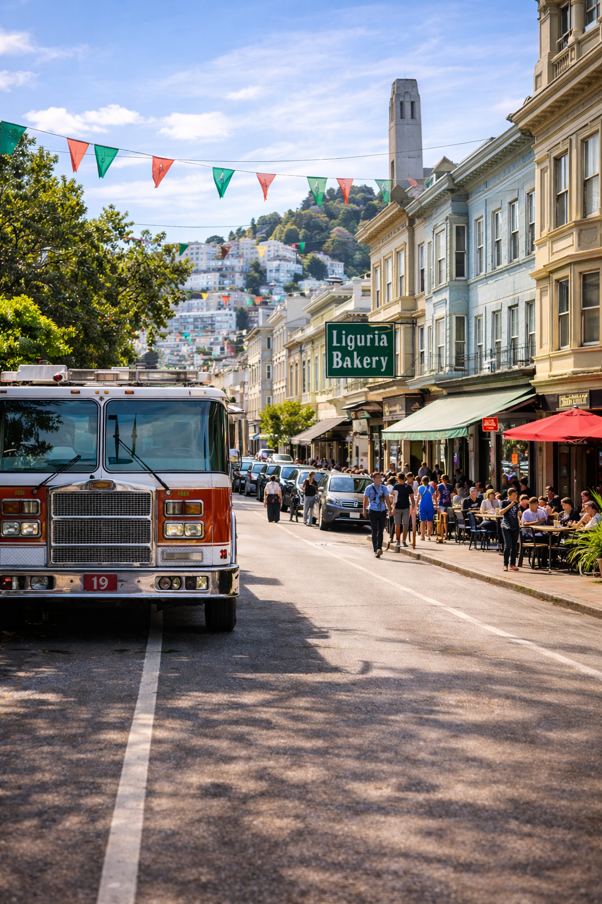
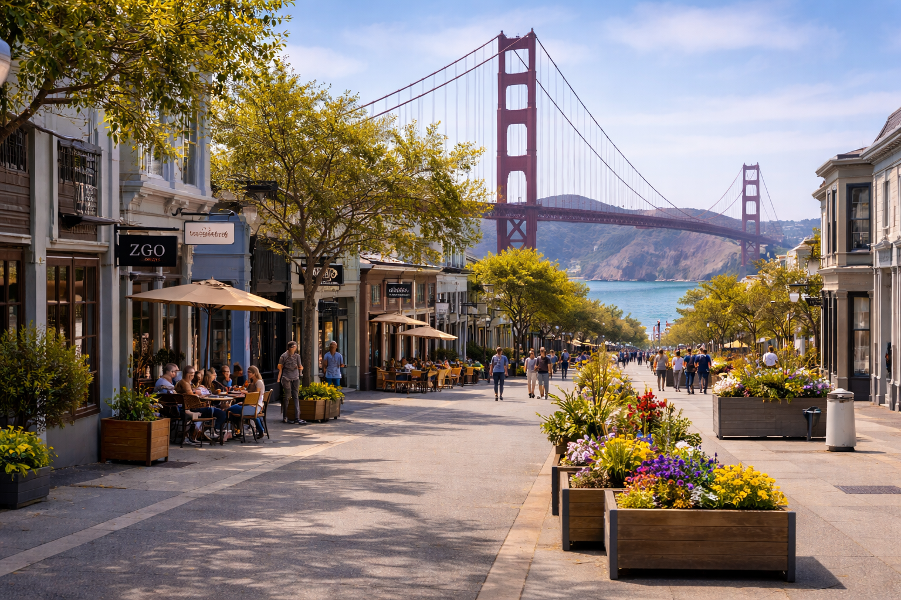
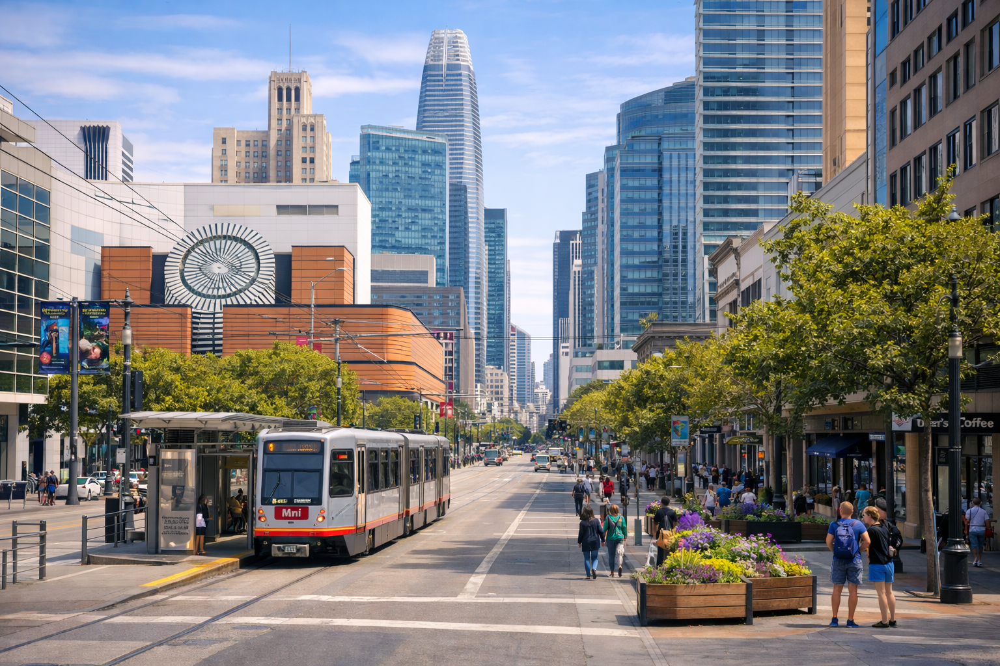
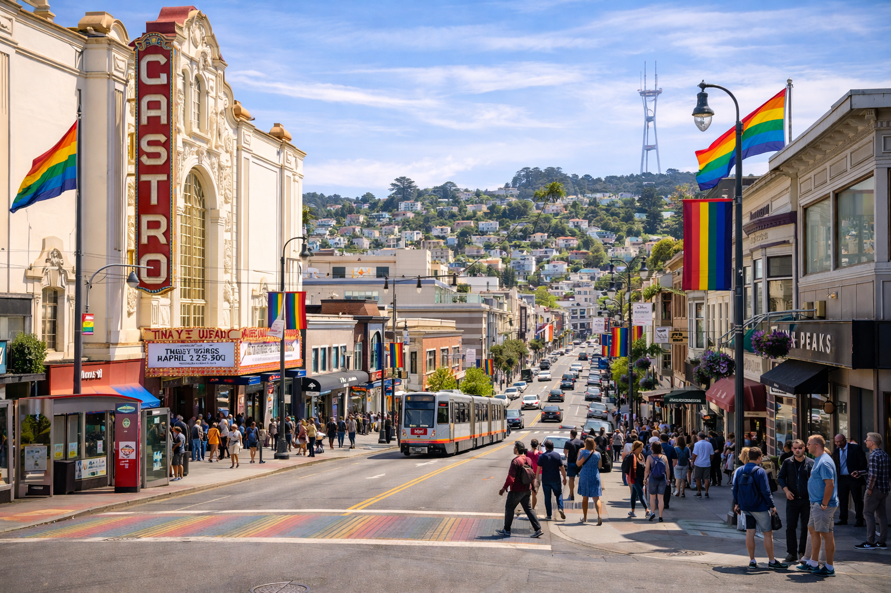
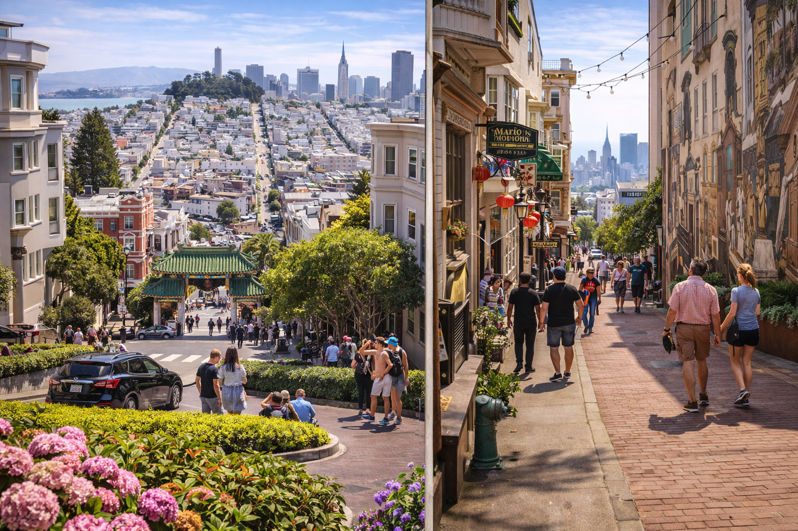

Walkable Neighborhoods of San Francisco
Discover SF neighborhoods where daily life thrives on foot — cafés, parks, groceries, transit, and culture all within a pleasant walk.
Why Walkability Matters
Walkable neighborhoods shape healthier lifestyles, stronger communities, and more sustainable cities—especially in a dense, vibrant place like San Francisco.
Everyday Convenience
Life within a 10-minute walk
Grocery stores, cafés, schools, pharmacies, and parks are all easily accessible—reducing time spent commuting and increasing time living.
Seamless Transit Access
Car-free mobility
Walkable SF neighborhoods integrate effortlessly with Muni, BART, and bike routes—making car ownership optional, not essential.
Health & Well-Being
Move naturally, feel better
Daily walking improves cardiovascular health, reduces stress, and encourages outdoor activity—without needing a gym membership.
Sustainable Living
Greener urban footprint
Fewer car trips mean lower emissions, quieter streets, and cleaner air—key priorities for San Francisco’s future.
Top Walkable Neighborhoods
These San Francisco neighborhoods consistently rank highest for walkability, everyday convenience, and access to transit, food, culture, and parks.

North Beach
Historic Italian neighborhood packed with cafes, bakeries, bookstores, and nightlife. Flat streets, dense blocks, and close proximity to Chinatown, downtown, and the waterfront make it one of SF’s most walkable areas.

Mission District
One of SF’s liveliest neighborhoods, known for murals, taquerias, nightlife, and cultural landmarks. Excellent BART and Muni access with nearly everything reachable on foot.

Hayes Valley
Trendy, compact neighborhood with boutiques, cafes, art spaces, and restaurants. Close to Civic Center, parks, and major transit routes, making daily errands easy without a car.

SoMa
Dense, urban neighborhood home to museums, tech offices, nightlife, and major transit hubs. Wide sidewalks and proximity to downtown make walking and transit the easiest way to get around.

Castro
Iconic LGBTQ+ neighborhood with vibrant nightlife, theaters, cafes, and strong transit access. Compact streets and nearby parks encourage walking year-round.

Inner Sunset
Relaxed residential area with local shops, cafes, and excellent access to Golden Gate Park. Strong Muni coverage makes commuting simple without a car.

Pacific Heights
Known for stunning views, classic architecture, and quiet streets. While hillier, it offers walkable access to parks, boutiques, and scenic overlooks.
Nob Hill
Central location with historic hotels, classic architecture, and walkable access to downtown, Union Square, and transit lines. Steep hills but unmatched connectivity.
How to Experience Walkable SF
Simple, enjoyable ways to explore San Francisco’s most walkable neighborhoods on foot—at your own pace.

Self-Guided Walking Tours
Explore iconic streets, hidden alleys, and local landmarks at your own pace. Walkable neighborhoods make it easy to discover culture without planning every step.

Café & Food Crawls
Walk from coffee shops to bakeries to neighborhood restaurants. Many of SF’s best food experiences are just minutes apart on foot.

Parks & Scenic Routes
Walkable neighborhoods connect seamlessly to parks, waterfronts, and scenic viewpoints—perfect for relaxed strolls and fresh air.
Walkable San Francisco Map
Explore San Francisco’s most walkable neighborhoods. Zoom in to see how compact, connected, and pedestrian-friendly the city really is.